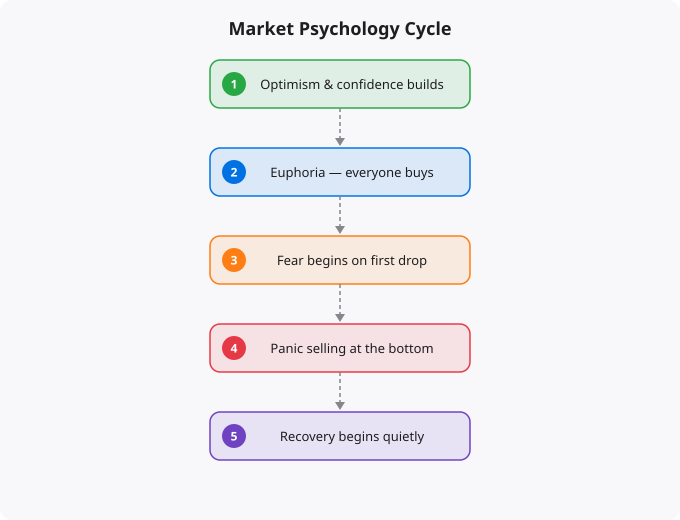

Economic textbooks describe financial markets as mechanisms for efficiently processing information and allocating capital. In this model, prices reflect all available information, rational investors buy undervalued assets and sell overvalued ones, and markets continuously move toward equilibrium. This model is useful as a theoretical framework, but it is incomplete. Real financial markets — the ones where actual humans lose and make money — operate significantly on psychology, emotion, and narrative. Understanding this psychological dimension is essential for anyone who wants to invest intelligently.
Every price in every financial market is ultimately the result of a human decision — or a set of human decisions encoded in an algorithm. Those decisions are shaped not just by analysis of fundamentals but by fear, greed, FOMO (fear of missing out), loss aversion, social proof, recency bias, and dozens of other psychological factors that researchers in behavioral economics have documented extensively. The academic field of behavioral finance, pioneered by Daniel Kahneman, Amos Tversky, Robert Shiller, and Richard Thaler (both Kahneman and Thaler received Nobel Prizes for this work), has established that systematic, predictable psychological biases affect financial decision-making at both individual and aggregate market levels.
Nobel economist Robert Shiller has argued persuasively that narratives — the stories people tell about the economy, markets, and specific investments — play a much larger role in market movements than is recognized by conventional financial theory. These narratives spread virally through media, social networks, and conversation, affecting the expectations and behavior of millions of investors simultaneously.
The internet and social media have amplified the speed and reach of financial narratives dramatically. The GameStop short squeeze of 2021, where retail investors coordinated on Reddit's WallStreetBets to drive a struggling video game retailer's stock from around $20 to nearly $500, was fundamentally a narrative and social movement that operated largely independent of the company's underlying business fundamentals. The narrative of defeating short-selling hedge funds motivated millions of individual investors to buy and hold, creating a self-fulfilling price movement of extraordinary magnitude.
Two emotions dominate market psychology: fear and greed. These are not the only emotions that affect markets, but they are the primary drivers of the boom-bust cycles that characterize market behavior across history. During periods of sustained price appreciation, greed and FOMO dominate. Investors who have been watching an asset rise feel compelled to participate before it goes higher. Risk tolerance expands. Asset prices are bid up beyond what fundamental analysis would justify. People who have never invested before open accounts because they see friends and family making money easily.
When prices eventually reverse, fear dominates. The same investors who could not imagine the asset falling now cannot imagine it recovering. Loss aversion — the psychological tendency to feel losses about twice as intensely as equivalent gains — causes investors to focus intensely on their declining portfolio values. Media coverage shifts to catastrophic scenarios. Social proof works in reverse: everyone around you is selling, so you feel the pull to sell too. Market bottoms are formed in exactly these conditions of maximum pessimism, which is why they are so difficult to identify and act on in real time.
Herding is the tendency of individuals to follow the crowd, especially under conditions of uncertainty. In financial markets, herding creates momentum — the tendency of assets that have been rising to continue rising (as more buyers pile in, attracted by recent performance) and assets that have been falling to continue falling (as more sellers emerge, motivated by fear of further decline). Momentum as a market phenomenon has been extensively documented across different markets, time periods, and asset classes. It is not a sign of market irrationality in isolation — herding is often rational at the individual level, since following the crowd reduces the risk of being uniquely wrong. But herding at the aggregate level creates price movements that overshoot fundamentals in both directions.
Recency bias is the human tendency to overweight recent experience when forming expectations about the future. In financial markets, this manifests as the assumption that recent market trends will continue. After a multi-year bull market, investors assume stocks will continue rising. After a severe bear market, investors assume conditions will remain bad or get worse. This bias creates systematic patterns: investors are most optimistic near market tops (when they should be cautious) and most pessimistic near market bottoms (when they should be accumulating). Recognizing recency bias in yourself — and actively asking what conditions would need to be true for recent trends to reverse — is one of the most valuable disciplines in investing.
The goal of understanding market psychology is not to become a trader who tries to predict and profit from psychological swings — that is extremely difficult even for professionals. The goal is to not be a victim of your own psychology. Make investment decisions in advance and commit to them, rather than deciding in the moment when emotions are running high. Use systematic investing — automated SIPs that invest regardless of market conditions — to remove the emotional decision of when to invest. When you feel the strongest urge to sell because everything looks terrible, ask yourself if your investment thesis has actually changed or if you are just experiencing fear. Keep a record of why you made each investment decision, and review those reasons when markets are volatile. The investor who manages their own psychology well has a genuine edge in markets, because so many participants do not.
← Back to Blog
Disclaimer:
This article is for educational and informational purposes only.
It does not constitute financial, investment, or trading advice.
Market behavior involves risk, uncertainty, and individual interpretation.
Always consult official sources or professionals before making decisions.
Reading about markets is not investing. Understanding market theory is not making money. The gap between knowledge and results in investing is filled by the practice of forming independent views, testing them against reality, and updating your thinking when evidence contradicts your expectations.
Developing a genuine market view requires: choosing 2-3 indicators to follow consistently rather than tracking dozens superficially, reading primary sources (earnings reports, central bank statements, economic data releases) rather than just media commentary, maintaining an investment journal where you record your reasoning when making decisions, and reviewing that reasoning 6-12 months later to understand where your thinking was right or wrong.
Weekly routine (30 minutes):
Monday: Review portfolio performance vs benchmark
Tuesday: Read one company annual report (if stock investor)
Wednesday: Check economic calendar for key data releases
Thursday: Review Fed/RBI communications from that week
Friday: Journal -- what happened this week vs expectations?
Monthly routine (2 hours):
Review asset allocation vs targets
Rebalance if any asset class drifted more than 5%
Read one investment book chapter or whitepaper
Review all open positions and thesis validity
Quarterly routine (4 hours):
Portfolio review: what worked, what did not, why?
Tax optimization check
Update financial goals
Read one earnings season summary for key companiesMarkets in liquid, public securities are highly efficient at incorporating publicly available information. Reading the same Bloomberg article, watching the same CNBC segment, and following the same analysts as millions of other investors does not give you an informational edge. By the time you read it, the market has likely already priced it in.
Where individual investors can have a genuine edge: patience (most institutional investors face quarterly performance pressure that prevents holding through temporary weakness), sector expertise (knowing an industry deeply as a practitioner gives real insight), tax efficiency (individual investors can optimise for after-tax returns in ways institutions cannot), and behavior (simply not panic selling during drawdowns outperforms most active strategies).
Beginners think about investing as picking the stocks that will go up the most. Experienced investors think about risk management first -- ensuring that mistakes do not destroy the portfolio's ability to recover and compound. The most important risk management principles: never invest money you will need within 5 years, diversify across asset classes and geographies, avoid leverage (borrowed money amplifies both gains and losses), and size positions so that being completely wrong on any single investment does not materially damage the portfolio.
Standard financial planning guidance: build a 3-6 month emergency fund first. Then invest 10-20% of gross income, increasing toward 20%+ as income grows. For aggressive wealth building, aim for a 30-40% savings rate. Invest consistently regardless of market conditions -- time in the market beats timing the market.
Investing is deploying capital for long periods (years to decades) based on fundamental value creation. Trading is buying and selling over shorter timeframes based on price movements. Most retail investors who attempt trading underperform a simple index fund. Investing in low-cost index funds consistently outperforms most active strategies over 10+ year periods.
Start with NIFTY 50 or NIFTY 500 index funds via SIP (Systematic Investment Plan) through any major AMC or broker. Index funds provide diversification, low costs, and performance that matches the market. Add direct equity only after you have at least 6-12 months of investing experience and genuine time to research individual companies.
Yes. India is one of the fastest-growing tech markets globally. These skills are in high demand across startups, MNCs, and product companies in Bangalore, Hyderabad, Pune, and Mumbai.
Follow official documentation, tech blogs from practitioners, GitHub repositories, and communities like Dev.to, Hashnode, and Reddit. Avoid news that creates urgency without substance.
Official documentation first. Then practical tutorials. Then build real projects. SRJahir Tech articles are written from real production experience — bookmark the series that matches your learning goal.
Consistent daily practice for 3-6 months produces real, usable skills. The key is building projects, not just reading. Every article on SRJahir Tech includes practical examples you can implement today.
Yes. All articles on SRJahir Tech are completely free. No paywalls, no subscriptions. Quality technical education should be accessible to everyone, especially aspiring engineers in India.